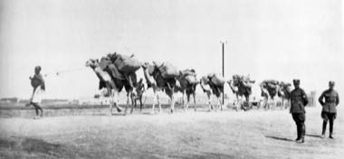

Home / Crossroads and Golden Ages / Africa: Nile and the Horn
Encyclopedia ID 1270
Horn of Africa camel caravan
Karawan


Lead a camel string across desert wells, balancing water, load and pace.
Heritage note
Part of the living heritage of Djibouti. Animals are partners in this tradition; good care and local rules always come first.
Origins
Usually placed in the era of Crossroads and Golden Ages (about 500 to 1500), although its exact origins are uncertain, within the cultural world of Africa: Nile and the Horn.
Sources
Related entries

Highland Bagpipe Chanter and Drone
United Kingdom · Musical instruments
Latvian Bagpipe and Folk Pipes
Latvia · Musical instruments
Mezoued Bagpipe and Tabl Drum
Tunisia · Musical instruments
Lake Assal salt harvest
Djibouti · Sports with animal partners
Wazza gourd trumpet
Sudan · Musical instrumentsLadu
Djibouti +1 · Board and table games